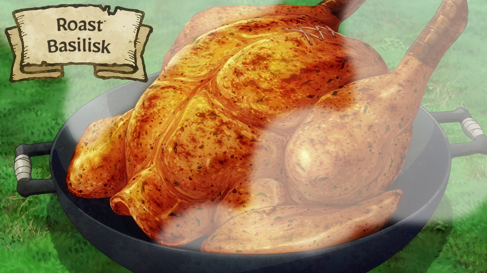

A healthy dish stuffed with medicinal herbs then slowly spit-roasted over an open fire. It tastes much better if left overnight to rest after the spice rub and prior to stuffing, although if time is of the essence it can be cooked immediately. Serves 6.
Ingredients:
- 1 Basilisk
- Mana herb (to taste)
- Salt and pepper (to taste)
- Antidotal herb (1 med. size)
- Strong medicinal herb (1 bunch)
- Ultra medicinal herb (1 bunch)
- Anti-paralysis herb (1 med. size)
- Anti-petrify herb (1 med. size)
Stuffing:
How to cook:
- Cut off the tail and feet.
- Blanch it a bit and pluck the basilisk's feathers.
- Take its innards out and rub your spices on it.
- Stuff it with veggies and finely chopped herbs and tie up the opening.
- Put a skewer through the meat and roast it thoroughly.